Exemple : un simple serveur Apache tournant sur Google Kubernetes Engine
Petit rappel, GKE est le système Kubernetes de la plateforme Google Cloud. Le cluster GKE est composé d’instances de Machines Virtuelles exécutant Kubernetes.
Première étape : Setup le projet Google Cloud
A/ Le compte
Il vous faudra créer un compte Google (si vous n'en avez pas déjà un). Ensuite, il faut démarrer l'essai gratuit.
L'essai activé, allez sur la Dashboard pour créer un nouveau projet.
Pensez à noter le Project ID, il servira pour la suite du projet
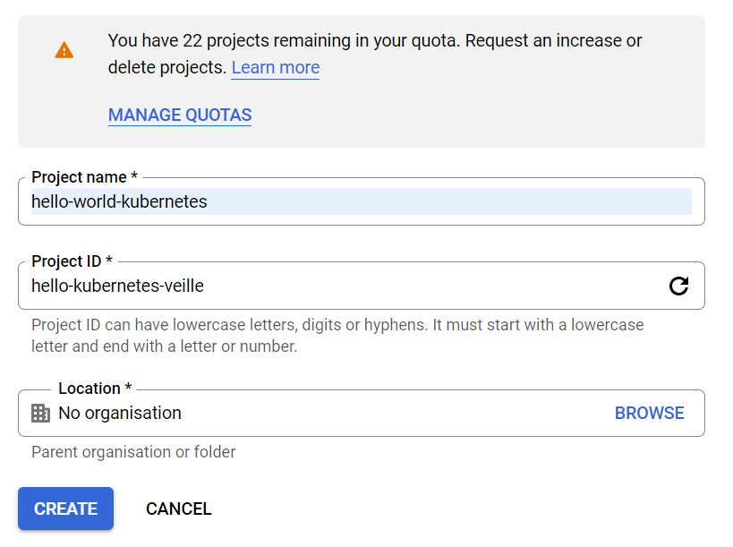
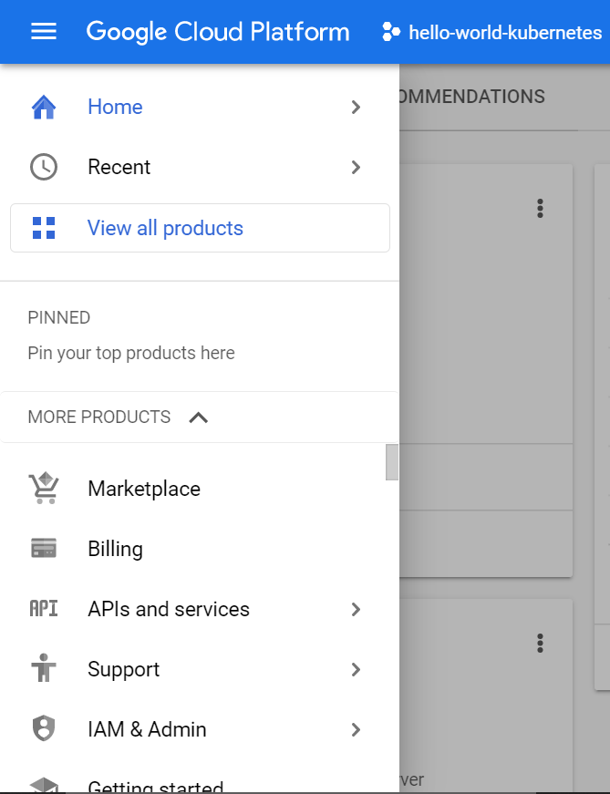
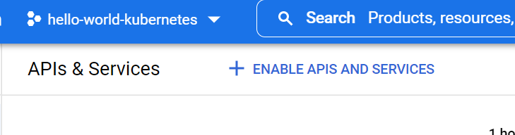
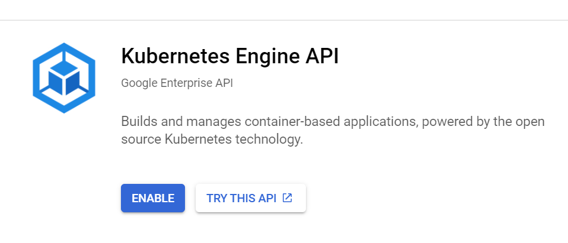
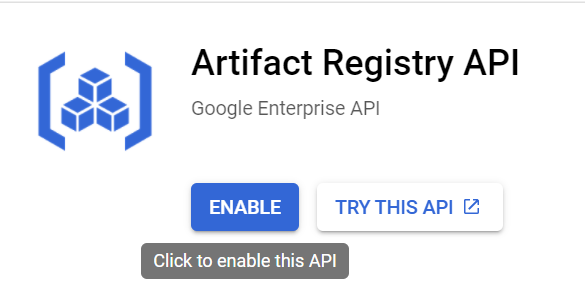
B/ Préparation du projet
Nous aurons besoin de deux APIs fournies par Google Cloud : L'Artifact Registry et Google Kubernetes Engine
Pour les activer, rendez vous dans APIs and services dans le volet de navigation, cliquez sur Enable APIs and Services
Cherchez Kubernetes et Artifact Registry, puis activez-les
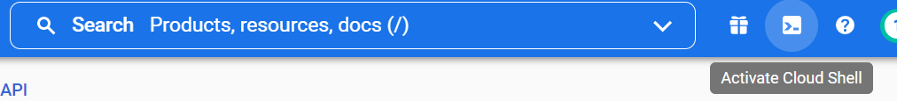
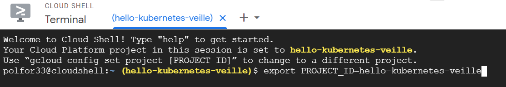
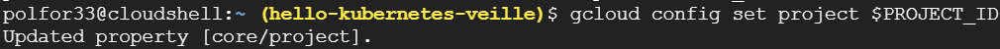
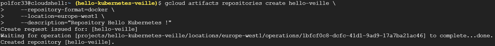
C/ Préparation de notre environnement de travail
Tout d'abord, nous devons accéder à la console Google Cloud
Ensuite, définissons une variable $PROJECT_ID qui simplifiera nos commandes plus tard (grâce à l'ID du projet)
Puis fournissons cette variable à l'ensemble de commandes gcloud pour qu'il identifie notre projet.
Enfin, créons le repository Artifact Registry, qui stockera notre image pour la fournir à GKE. A partir de ce moment, je vais utiliser des commandes avec une "région". Celles qui sont accessibles grâce à gcloud artifacts locations list
Deuxième étape : Création et gestion de notre cluster GKE
Rentrez dans le dossier ainsi créé, et demandez à Docker de build l'image et de la stocker dans l'environnement local.
Nous devons à présent authentifier Docker auprès de notre Artifact Registry
Enfin, pushons notre image vers le Repository que nous avons créé auparavant.
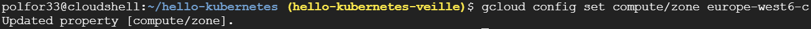
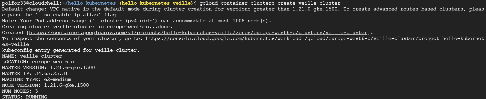
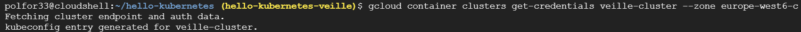
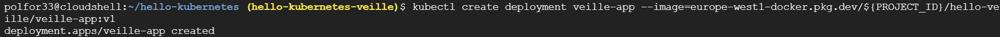
B/ Le cluster
Maintenant que notre image se trouve bien sur notre Repository, nous allons créer notre cluster GKE. Tout d'abord nous devons sélectionner la zone d'exécution de notre cluster, le plus près du Repository sera le mieux. Vous pouvez voie les zones disponibles avec gcloud compute zones list
Ensuite, plus qu'à créer le cluster en lui-même ! (cela peut prendre jusqu'à quelques minutes)
Pour s’assurer de la connexion au cluster nous pouvons utiliser get-credentials
Enfin, déployons notre application sur le custer à partir de l'image sur le Repository
Voilà ! Notre application est bien déployée, mais elle est inaccessible car nous n'avons pas défini de service d'adressage
Dernière étape : Exposons notre application au Web
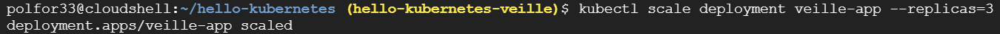
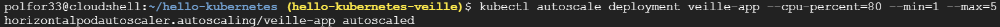
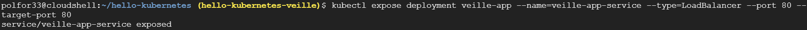
C'est aussi l'occasion de montrer l'utilité de l'équilibreur de charges Kubernetes Load Balancer.
Pour cela, nous allons "scale" notre application pour qu'elle soit maintenant composée de 3 pods
Ensuite, ajoutons une ressource de type "Horizontal Scaler" qui déploiera ou non nos pods en fonction de la charge
Et enfin, nous pouvons exposer notre application !
Le déploiement peut prendre quelques minutes, mais dès lors que l'External IP est générée (visible en utilisant kubectl get service ), nous pourrons accéder à notre application !
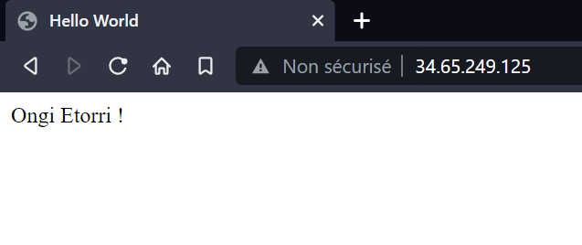
Voilà, notre application Kubernetes est fonctionnelle, et s'équilibre en fonction de la charge. Si vous voulez voir le résultat, l'exemple utilisé ici est accessible en dessous.